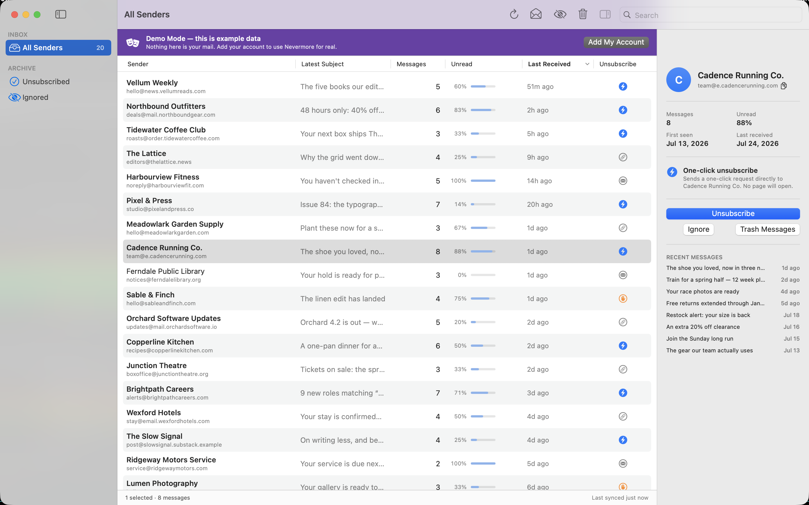
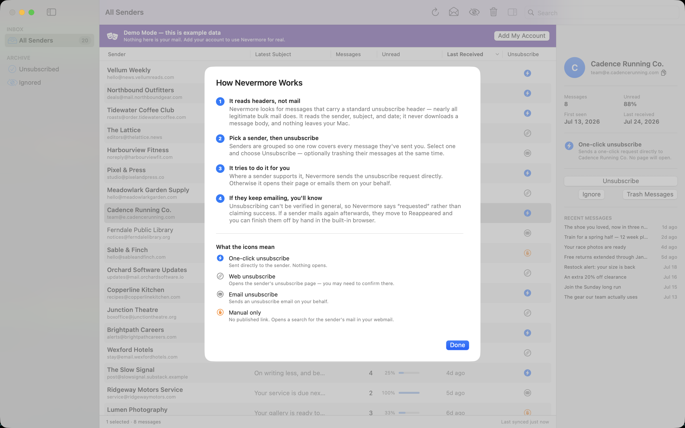

Nevermore finds every newsletter in your mailbox, groups them by sender, and lets you unsubscribe from — and delete — whole senders in a few keystrokes. It runs entirely on your Mac.
macOS 14 or later. Not yet on the Mac App Store.

Most unsubscribe tools are web services. You hand them OAuth access to your mailbox and they read it on their servers. Unroll.me famously sold the results. Nevermore is the opposite shape.
Everything runs on your Mac. There is nothing to sign up for, no telemetry, and no way for the developer to see your mail — there is no server to send it to.
It reads From, Subject, Date, and the unsubscribe headers. It never downloads a message body, and reading doesn't mark your mail as read.
Unsubscribing can't be verified in general, so Nevermore says requested rather than claiming success — and tells you when a sender ignores you.
Deleting moves mail to your provider's Trash, where you can restore it. The app never issues an IMAP EXPUNGE. Small batches undo with ⌘Z.
Nevermore is meant to be held down until the mailbox is clean. Every action moves you to the next sender, so a thousand newsletters is a few minutes of triage rather than an afternoon of clicking.
The first screen offers a demo: a full sample mailbox, no credentials, with every button live. It runs on a backend containing no network code at all, so nothing in demo mode can reach a server. Look around, then decide whether to hand the app a password.

Nevermore locates newsletters by the standard List-Unsubscribe
header. Nearly all legitimate bulk mail carries one — Gmail and Yahoo have
required it from bulk senders since 2024 — but a sender who buries their
unsubscribe link in the message body is invisible to it. Finding those would
mean reading your mail, which is exactly what this app doesn't do.
Flagged and starred messages are skipped on purpose, so your important mail is never in scope.
You sign in with an app-specific password over plain IMAP — no OAuth, no Google Cloud project, no consent screen. The password goes straight into the macOS Keychain, stored so it can't ride a backup to another machine. Nevermore then syncs message headers into a local SQLite file, groups senders by registrable domain, and sends unsubscribe requests directly to the endpoint each sender published.
Because those endpoints are written by strangers, every URL is checked before it's contacted: requests to private, loopback, and link-local addresses are refused, and redirects are re-validated at every hop.